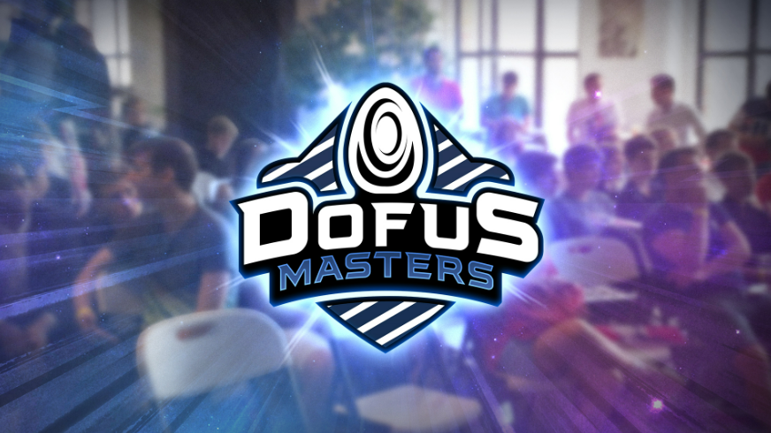

Actualité du 31/10/2023:
Depuis février, Qualifier, Championship et World Cup ont réuni des centaines d’équipes qui ont bataillé des mois durant. Ainsi 16 equipes ce sont qualifié pour la compétition de 2023 appelée : Dofus Masters. La recompense pour cette compétition sera de 10 000€. Les dates important seront les groups le : 05/11 à 16/11, les quarts de finale du 18/11 au 21/11, et la finale aura lieux le 02/12 qui seront en direct des locaux d'ankama à Roubaix, sur place il y aura : des joueurs, commentateurs et des spectateurs. Le nombre de places sera limité et régulé par une billetterie qui ouvrira prochainement.